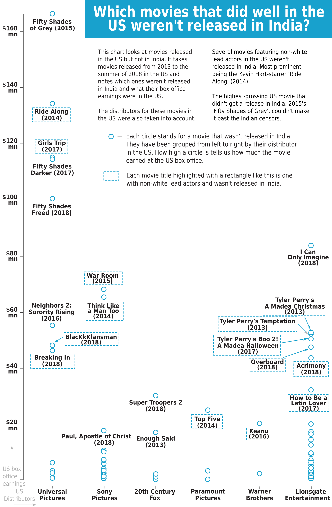
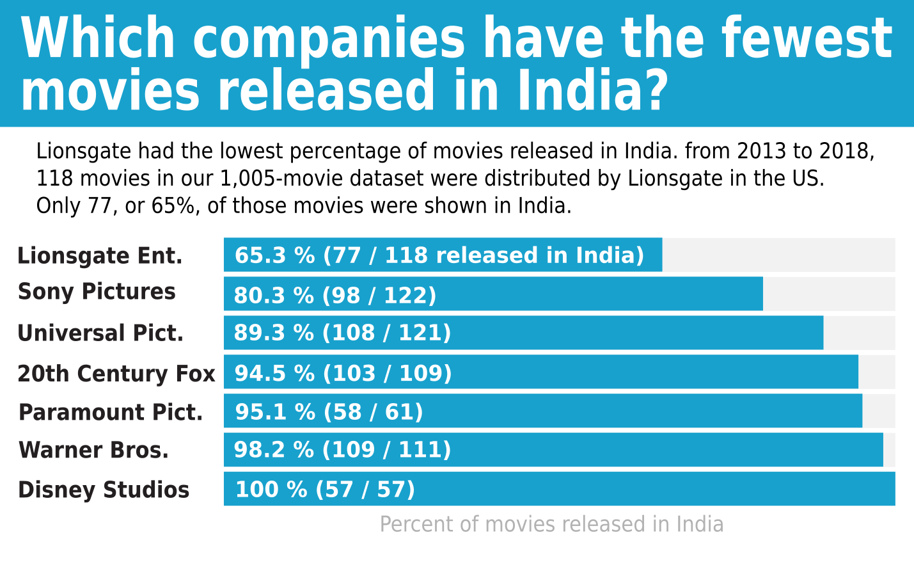
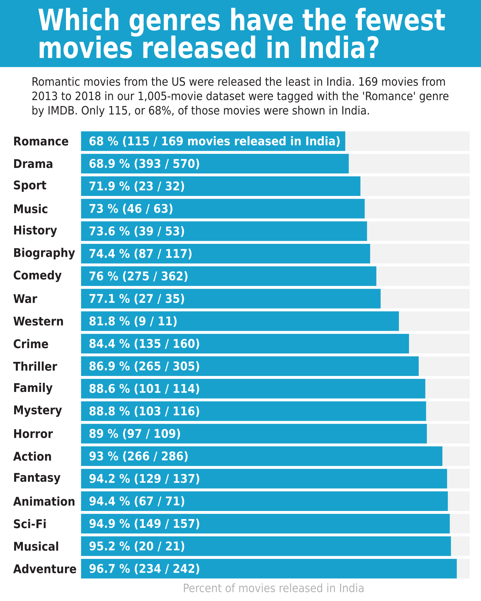
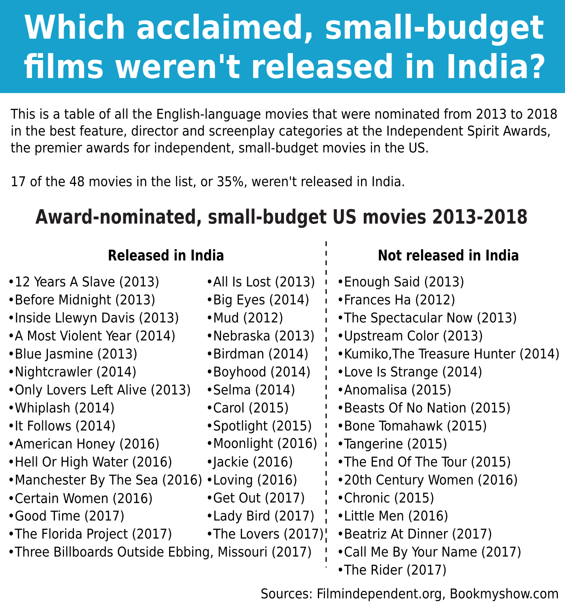

The superhero movie ‘Aquaman’ was released in India this week and is one of many movies from Hollywood to be released here every year. The movie, with a reported budget of $160 million, is even being released in India a week earlier than in the US.
But not every Hollywood movie makes its way to India. So which movies don’t get released in Indian theatres? And are there any trends around the movies that don’t get released here?
According to this analysis, American movies that target certain demographics such as African-Americans, movies from smaller movie companies such as Lionsgate and those from genres such as 'romance' are the ones that typically don’t get shown in Indian theatres.
I based my observations on a dataset of 1,005 movies released in the US from the past five-and-a-half years, basically from 2013 up to this summer (August 2018). I arrived at the dataset by first compiling all the movies (5,628 in total) that were released in the US during this period and that had an American production company involved. The moviebiz website the-numbers.com was used to arrive at the dataset.
Short films, documentaries and movies not primarily in English were kept out.
Then movies that earned less than $500,000 at the US box office were excluded. This limit of $500,000 was used to restrict the dataset to mainstream Hollywood output as well as bigger independent movies made outside the Hollywood system. After all this filtering, I end up with a dataset of 1,005 movies released in the US over the past five-and-a-half years.
Using a list sent by the movie booking site BookMyShow of all the English-language movies released in Indian theatres, we can find which of these 1,005 American movies weren’t released here. So what patterns do we see emerging?
One way to look at the data is to find those movies that do well in the US but weren’t shown in India. (The thinking being that if they had done well in the US, they would have just as much a chance of doing well in India.)
From the data we see that there are 12 movies in the 1,005-movie dataset that earned more than $50 million at the US box office but, for some reason or the other, weren’t released in India.
Of these 12 movies, three were from the erotic ‘Fifty shades’ franchise, which the censor board (or the Central Boad of Film Certification, to give its official name) didn’t clear. One of the movies was the adult comedy “Neighbors 2: Sorority Rising” while six of them were movies featuring African-American casts and themes. This includes two movies from the Black filmmaker Tyler Perry, the 2013 movies ‘Tyler Perry’s Temptation’ and ‘Tyler Perry’s A Madea Christmas”.
The fact that six movies with African-American leads that went on to earn $50-150 million at the US box office weren’t released in India is kind of surprising. For an idea of what that means, it’s like if 2013’s ‘The Wolf of Wall Street’ that earned in a similar range ($116 million) and starred Leonardo Di Caprio wasn’t released here.
There were also two Hispanic-focussed movies featuring the Mexican actor Eugenio Derbez in ‘Overboard’ (which earned around $50 million in the US in 2018) and ‘How To Be a Latin Lover’ ($32 million in 2017) that weren’t released in India.
Of the six hit movies featuring mostly African-American characters not released in India, the two Tyler Perry movies were distributed by the movie company Lionsgate Entertainment in the US. Lionsgate only set up their own operations in India recently and were dependent in the past on distribution arrangements with Indian companies such as Eros International.
In fact, one of Lionsgate’s biggest movies, the second movie in the ‘Hunger Games’ series, 2013’s ‘The Hunger Games: Catching Fire’ was distributed by NBC Universal India, the Indian distribution arm of another company Universal Pictures, according to certificates available on the censor board website. With Lionsgate having an increased presence in India now, we could see a greater share of their movies distributed from now on.
Two other big movies centred on African-Americans that weren’t released were the 2017 movie ‘Girls Trip’ which made around $115 million in the US and the Kevin Hart-starrer ‘Ride Along’ (2014) which made $134 million, both of which were distributed in the US by Universal Pictures.
But there are several movies centred on African-American characters that have seen a release in India. In recent years, the 2013 Oscar-winning movie ‘12 Years a Slave’, ‘Moonlight’ (2016) and ‘Straight Outta Compton’ (2015) have been released in India. ‘Black Panther’ (2018) even earned around $11 million at the Indian box office, according to the website Boxofficemojo.com, but it could be argued that its success was more down to Indian audiences seeing it as a Marvel superhero movie.
The thing is that if these distributors had taken a chance on such African-American content, it might probably have had a chance of doing well in India, or at least as well as other Hollywood movies have done.
These movies aren’t so culturally specific that there isn’t a way ‘in’ for Indian audiences. Some of the Tyler Perry comedies, without sounding patronising, are so broad that they would be easy for Indians to ‘get’.
Also, several aspects of African-American culture have been adopted (or appropriated, depending on your point of view) by Indian upper- and middle-class youth. This includes hip-hop music, dance or clothing, so there is a chance that there would have been more of an audience for these movies than distributors thought possible.
If you think about it, most Hollywood movies emerge from a specific cultural experience themselves, a White-American one. But because of Indian overexposure to it, White-American culture is somehow not seen as something specific, but something universal that has transcended its roots. So products of that culture, such as movies, have become something that everyone can consume.
It shouldn’t be easier for Indians to get these movies, but somehow it is. And maybe the very fact that an article like this is possible, asking why we don’t get more American movies may even be proof of that cultural dominance. The writer is fully aware of the irony here.
Now we are talking not about a minority in India but one in the US, so getting more African-American movies shown here may not be our fight to fight. Maybe questions should be asked about whether the pattern in India is repeated in other countries, but those are questions people in the US should be raising.
The fact that certain African-American movies don’t get released here is regrettable, but is not something to be outraged about in itself. If there is anything in India we should be worried about, it’s about how this acts as evidence for cultural prejudices and market forces interacting with each other. The danger is that these prejudices that come with a White-American worldview could end up being internalised and reproduced by Indians.
Another way to explore the 1,005-movie dataset is to look at the companies or ‘studios’ that produce and distribute these movies. At least one of the names and logos you see at the very beginning of a movie will belong to one of these studios.
Now who produces and distributes a movie is not something that we as moviegoers normally think about. But breaking up the dataset by movie studio gives us an idea of whether there are patterns around certain studios and whether a lower share of a particular studio’s movies are released in India.
The major studios that make these movies–and select franchises associated with them—are 20th Century Fox (‘X-men’, ‘Planet of the Apes’ franchises), Warner Brothers (‘Batman’, ‘Fantastic Beasts’), Universal Pictures (‘Jurassic World’, ‘Fast & Furious’), Walt Disney Studios (‘Star Wars’, ‘Avengers’), Paramount Pictures (‘Mission Impossible’, ‘Transformers’) and Sony Pictures (‘Spider-man’). Lionsgate (‘Hunger Games’) is often included with these six studios, and is sometimes called a ‘mini-major’.
(Also, the parent company of 20th Century Fox, 21st Century Fox has been bought by Disney, but since the merger will only be completed in 2019, it will continue to be considered a separate entity here.)
What happens after a movie gets made in the US is that it needs to get distributed abroad. And to do this, each of the major movie studios have their own distribution arms in India.
For Paramount, the Indian arm is Viacom18 Motion Pictures, for 20th century Fox→Fox Star Studios, for Walt Disney Studios→Walt Disney Co. (India), for Warner Brothers→Warner Bros. India, for Sony Pictures→Sony Pictures India, for Universal Pictures→Universal Pictures International India and for Lionsgate→Lionsgate India.
For the release of most US movies, it’s usually the Indian arm of these majors that would take care of distribution in the country. (Except in the case of Lionsgate, which had alternative distribution arrangements in the past.) The simple reason being that by taking care of distribution themselves, studios get to keep as much of the earnings from a huge territory such as India.
And so, because studios keep India distribution with themselves, the choice to release a movie in India or not is made within the studios. So leaving aside movies that weren’t cleared by the censor board, the responsibility for not releasing a movie is very much that of the studios.
If we group the 1,005 movies in this dataset by the studios that distributed it in the US, we see that Lionsgate had the lowest share of movies released. In this 1,005-strong dataset of movies from 2013 to 2018, of the 188 movies distributed by Lionsgate in the US, only 77 or around 65% made it to India.
Worst among the majors is Sony, with 98 of the 122 movies in this dataset being released in India, or around four in every five.
At the opposite end is Disney, with a 100% record. 52 of its 52 movies that were distributed in the US were distributed here. Warner has a pretty good record too with over 98 % (109 of 111) of its movies in this dataset that were distributed in the US being distributed here too.
Another way to look at the movie dataset is to explore the genres these movies are tagged with by the move data website IMDB.com. For example, ‘Dunkirk’, the 2017 movie about a military operation during World War II, has been tagged with multiple genres such as ‘Thriller’, ‘History’ and ‘War’.
Once we find the number of movies that get tagged with a particular genre, we can calculate what percentage of that genre’s movies aren’t released in India. (Note that if a movie is tagged with more than one genre, the way ‘Dunkirk’ has been, it’s been included in the calculations for each of those genres.)
The genre that sees the lowest percentage of movies released in India is ‘romance’. Of the 169 movies tagged with the ‘romance’ genre by IMDB from 2013-2018, 115 of them , or 68 %, were released in India.
The most prominent movies among them being the three movies from the ‘Fifty shades’ trilogy. Apart from them, the movies that were tagged with ‘Romance’ and not released in India were ones featuring non-White leads, ‘Think Like a Man Too’ (2014) and ‘Overboard’ (2018).
The genre with the second lowest share of movies released is ‘drama’. Of the 570 movies that were released from 2013 – 2018, 393 were released or around 69%.
( ‘Drama’ though is an overused tag, and may be overly penalised because of how much gets put under it. 57% of the movies in this 1005-movie dataset are tagged with ‘drama’, ‘comedy’ with 36% comes a distant second.)
A recent and prominent drama that wasn’t released in India is 2018’s ‘Operation Finale’, starring Ben Kingsley and Jason Isaac. It even might have done well because of the goodwill Indians still have for Kingsley because of his portrayal of Gandhi in the 1982 movie.
On the other extreme, the genre which saw almost all of its movies released in the US is ‘adventure’ . There were 242 movies in the 1,005-movie dataset that were tagged with ‘adventure’. Over 234 of them or around 97 percent were released in India. Unsurprisingly, around 95% of ‘animation’ and ‘sci-fi’ movies in the 1,005-movie dataset were also released here.
One shortcoming of the dataset is that because of the $50,000 US box office earning minimum, some movies that are small-budget but critically acclaimed will have been excluded.
To make up for that and see what the release rate is among movies that are small but still deserving of an audience, I compiled a list of award-nominated, independent movies. I specifically looked at the English-language movies that received nominations from the Independent Spirit Awards in the Best Feature, Best Director and Best Screenplay categories from 2014 to 2018.
The Independent Spirit Awards are the premier awards in the US for independent movies, the financial criterion for inclusion being a production budget less than $20 million.
The list came up to 48 movies, and of these 48, 17 were not released, or around 35%. These include 2017’s critical darling and Oscar winner ‘Call me by your name’, a celebration of love between two men. It’s safe to say that this movie would not have made it past the censors except in a very sanitised form. (In fact, the version of the movie approved by the censor board for TV broadcasts has around 12 minutes cut!)
Many of these independent movies weren’t distributed by major movie studios in the US but by smaller ones. What happens with many of these smaller movies is that they are produced outside the ‘majors’, but are distributed by them. So if some of these movies didn’t have any major studios involved, it could partially explain how these movies didn’t see a release in India.
A few of these movies that weren’t released were produced by boutique divisions of the major studios, Sony Pictures Classics for example, or distributed by them off the buzz generated at screenings during film festivals such as Sundance in the US. So, in a way, there is enough advance word of mouth to know how good or bad these movies are and they don’t really represent giant leaps into the unknown.
It is difficult to understand how some of these critically-acclaimed movies that had major movie studios behind them didn’t see an Indian release. Examples include 2015’s ‘ Love is Strange’ starring Alfred Molina that was distributed by Sony Pictures Classics and 2014’s ‘Enough Said’ starring Julia-Louis Dreyfus distributed by Fox’s boutique division Fox Searchlight.
In a way, it comes down to rights and responsibilities. What rights do we have as an Indian moviegoing audience? Do we really have a right to watch everything that Hollywood makes in a theatre?
And what responsibilities do US movie studios have to audiences in other countries like India? Studios could rationally argue that their primary responsibility is to their stockholders and if releasing a movie in India doesn’t give them the returns they are looking for, should they bother showing it here?
The fact of the matter is that movies not released in Indian theatres can always be seen later on TV, or on streaming services like Netflix, so practically we’re not really losing out on much. Maybe the only thing we’re losing out on is getting to watch these movies in theatres as part of a shared, collective experience.
So if we’re resigned to the fact that these studios are the ones making choices over what we watch or not in theatres, the least they can do is make better choices.
Most of the data for the story was taken from the-numbers.com and IMDB. The Bookmyshow team also helped me out with some data.
You can find the python code used to scrape the webpages and analyse the data in this jupyter notebook. The notebook also has a summary of the different steps I took in the analysis.
Can't share much of the data I used, that belongs to the various movie websites, so I can't redistribute it. But the github repo does have the final dataset I used to arrive at my results. It's available as a csv here.
If you’re an econometrician, statistician or data scientist and think I should have done something differently in this analysis, do let me know! You can contact me on twitter—@shijith—and by email—mail@shijith.com.
Images lifted from IMDB. Amazon please let this slide! :)